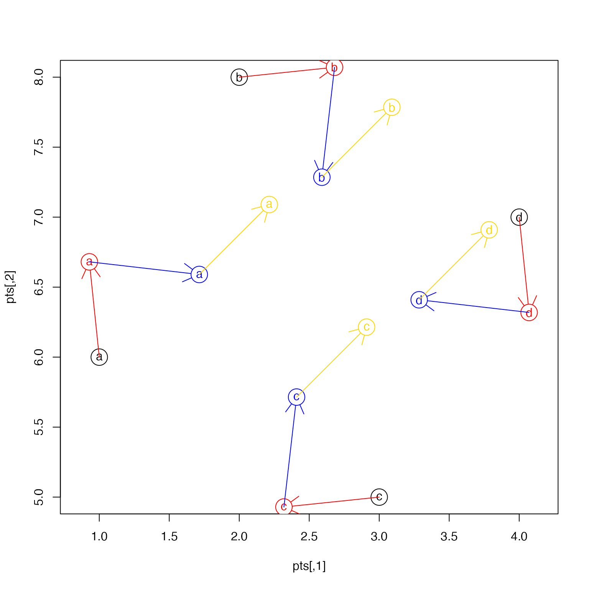

Scale, rotate, and shift numeric coordinates
Arguments
- x
matrixwith one or more columns containingnumericcoordinates.- scale
numericvector whose values are expanded to lengthncol(x). After subtracting thecenter, the coordinates in each column are multiplied by thescale.- rotate_degrees
numericvalue in degrees indicating rotation around thecenter, where positive values are clockwise rotation. This rotation is only applied to two columns inxdefined byrotation_axes.- shift
numericvector whose values are expanded to lengthncol(x). The coordinates in each column are added to theshift, after applyingscaleandrotate_degrees- center
numericvector whose values are expanded to lengthncol(x), indicating the center point used forscaleandrotate_degreestransformations. Whencenter=NULLit is derived from the bounding box, which is the mean of the range for each column inx.- rotation_axes
integervector length 2, indicating which two columns inxare used forrotate_degrees.- plot_debug
logicalindicating whether to plot starting, intermediate, and final polygons during the processing.- ...
additional arguments are ignored.
Details
This function takes a numeric matrix with two or more numeric columns, and adjusts the coordinates in three ways:
scale: adjust coordinate range by a multiplier, relative to a central point
rotate: rotate coordinates around a central point in degrees
shift: adjust coordinate range by adding a numeric value
The operations are performed in that order: rotate, scale, shift.
When center is not defined, the default behavior is to use
the mean of the range of each coordinate column. Using the mean
range is equivalent to using the mean of the bounding box.
See also
Other venndir spatial:
degrees_to_adj(),
diff_degrees(),
display_angles(),
mean_degree_arc(),
mean_degrees(),
spread_degrees()
Examples
pts <- matrix(ncol=2, c(1:4, 6, 8, 5, 7));
rownames(pts) <- letters[1:4];
plot(pts, pch=rownames(pts), asp=1)
points(pts, pch=21, cex=3)
pts2 <- rescale_coordinates(pts, rotate_degrees=25);
arrows(x0=pts[,1], x1=pts2[,1], y0=pts[,2], y1=pts2[,2], col="red")
points(pts2, pch=21, cex=3, col="red", bg="white")
points(pts2, pch=rownames(pts), col="red")
pts3 <- rescale_coordinates(pts2, scale=0.5);
arrows(x0=pts2[,1], x1=pts3[,1], y0=pts2[,2], y1=pts3[,2], col="blue")
points(pts3, pch=21, cex=3, col="blue", bg="white")
points(pts3, pch=rownames(pts), col="blue")
pts4 <- rescale_coordinates(pts3, shift=c(0.5, 0.5));
arrows(x0=pts3[,1], x1=pts4[,1], y0=pts3[,2], y1=pts4[,2], col="gold")
points(pts4, pch=21, cex=3, col="gold", bg="white")
points(pts4, pch=rownames(pts), col="gold")
